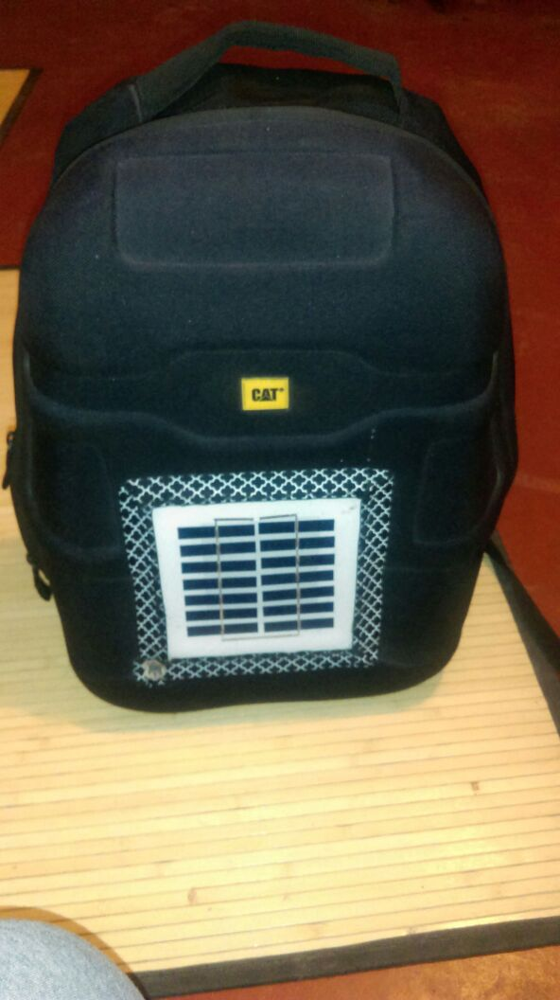

Language: English
En esta etapa se realizan pruebas con los prototipos realizados previamente y se solicita a los usuarios sus opiniones y comentarios al respecto, en base al uso de los prototipos. Es una fase esencial en el Design Thinking pues ayuda a identificar errores y posibles carencias que puede tener el producto. En base a las pruebas se pueden presentar diversas mejoras sobre el producto.
Descripcion del Video
En el siguiente video mostramos nuestra entrevista a los usuarios, los cuales nos dieron su punto de vista respecto a nuestro producto y nos daban sus sugerencias para poder mejorar nuestro producto. En los siguintes archivos indicamos las mejoras correspondientes extraidas de nuestra entrevista:
Bosquejo(con informacion actulizada)
En el presente documento se muestra a detalle los nuevos cambios en nuestro esquema basico pero facil de entender que establece el orden de la presentación de ideas y distribucion de sus componentes.
Documento - Nuevo BosquejoDescomposicion Funcional(con informacion actualizada)
El presente documento se muestra a detalle los nuevos cambios de los componentes de nuestra mochila y su respectica descripcion tecnica, mejorado a las exigencias del cliente.
Documento - Nuevo Descomposicion FuncionalNuestro Proyecto Finalizado (MOCHILAZO)
